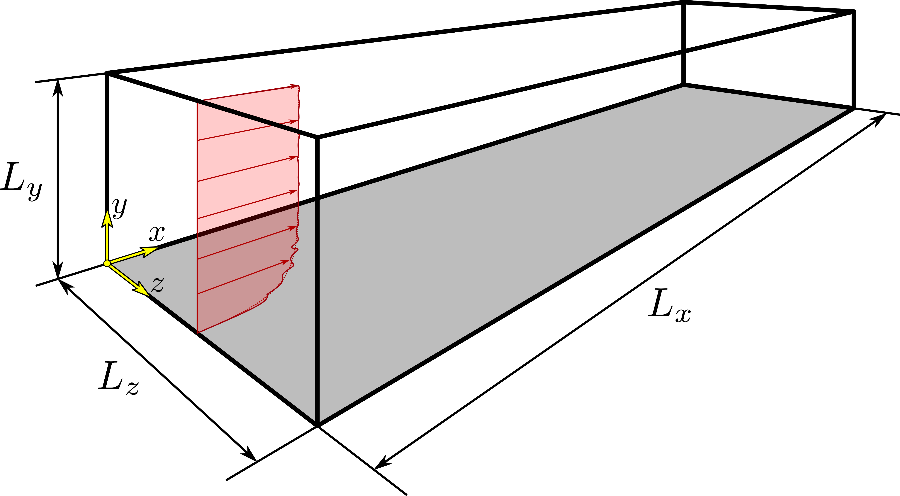

STREAmS flow cases
Contents
STREAmS flow cases#
STREAmS has been tailored to carry out DNS of three types of canonical compressible flow configurations:
compressible plane channel flow,
compressible boundary layer over a flat plate,
shock wave/boundary layer interaction generated by oblique shock impingement.
For all the flow cases, \(x\) indicates the streamwise coordinate, \(y\) indicates the wall-normal coordinate, and \(z\) indicates the spanwise coordinate. The dimensions of the computational domain in the corresponding directions are \(L_x\), \(L_y\), and \(L_z\).
The main parameters of each case are reported in the following.
Compressible plane channel flow#
{kind=link}
Simulations of the compressible plane channel flow are carried out imposing a constant flow rate. The height of the domain \(L_y\) is equal to \(2\,h\), where \(h\) thus indicates the half-height of the channel.
Bulk quantites are indicated with \(B\) subscript and are defined as:
bulk density
bulk velocity
bulk temperature
where \(V\) is the volume of the computational domain, \(\rho\) is the density, \(u\) is the streamwise velocity, and \(T\) is the temperature.
Reference quantities are indicated with \(R\) subscript and are defined as:
reference length
reference density
reference temperature
reference velocity
reference time
where \(T_w\) is the wall temperature, and \(R\) is the gas constant.
Relevant flow nondimensional parameters are:
estimated friction Reynolds number
bulk Reynolds number based on the bulk temperature
bulk Reynolds number based on the wall temperature
bulk Mach number based on the bulk temperature
bulk Mach number based on the wall temperature
where \(u_\tau\) is the friction velocity, \(\nu_w\) is the kinematic viscosity at the wall, \(\mu(T)\) is the dynamic viscosity at temperature \(T\), and \(\gamma = C_P/C_V\) is the heat capacity ratio, obtained dividing the specific heat capacity at constant pressure \(C_P\) by the specific heat capacity at constant volume \(C_V\).
For what concerns the bulk temperature, two different options are available for the simulations:
– Fixed bulk temperature. In this case, the user must supply the code with the desired values of \(M_B\), \(Re_\tau\), and an estimate of \(\theta\) in the input file. The code provides the corresponding values of \(\widetilde{M}_B\), \(\widetilde{Re}_B\), and \(Re_B\). CITA COLEMANN e MODESTI
– Freely-evolving bulk temperature. In this case, the user must supply the code with the desired values of \(\widetilde{M}_B\) and \(Re_\tau\) only, while \(\theta\) must be set to a value less than \(-1\). The code provides the value of \(\widetilde{Re}_B\), and an estimate of \(M_B\) and \(Re_B\). CITA ROUGHNESS JFM
Compressible boundary layer#
{kind=link}
Simulations of the compressible boundary layer are carried out imposing a null pressure gradient.
Reference quantities are indicated with \(R\) subscript and are defined as:
reference length
reference density
reference temperature
reference velocity
reference time
where \(\delta_0\) is the boundary layer thickness at the beginning of the domain (???), \(\rho_\infty\) is the free-stream density, and \(T_\infty\) is the free-stream temperature.
Relevant flow nondimensional parameters are:
estimated friction Reynolds number
free-stream Mach number
where \(U_\infty\) is the free-stream velocity.
Shock wave/boundary layer interaction#
{kind=link}
Simulations of the shock wave/boundary layer interaction assume that an oblique shock wave from the top surface of the domain impinges on a boundary layer developing on the flat bottom surface.
Reference quantities are indicated with \(R\) subscript and, as in the case of the compressible boundary layer, are defined as:
reference length
reference density
reference temperature
reference velocity
reference time
where \(\delta_0\) is the thickness of the undisturbed boundary layer at the beginning of the domain. (???)
Relevant flow nondimensional parameters, as in the case of the compressible boundary layer, are:
estimated friction Reynolds number
free-stream Mach number
In order to define the shock system, the user must provide also the two following parameters:
the shock impingment location \(x_{imp}^s\), which is the longitudinal coordinate where the impinging shock would intersect the bottom surface.
The shock wave angle \(\phi^s\), which is the acute angle between the shock and the top (or bottom) surface.